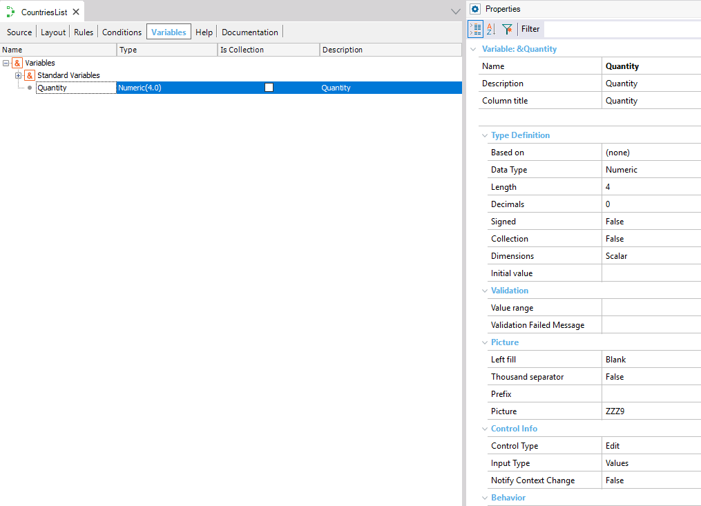

When you click on the Variables selector of a certain object, you enter to the Variable Editor which allows you to create, update and delete variables in your object.  Look at the Properties Editor on the right. There you can set the different properties related to the variable in which you are positioned. You have other ways to define variables. For example, from the Insert Variable dialog. See also |
| Backlinks | ||
| Category:Editors | Toc:GeneXus - Table of contents | Category:Procedure object |
| Variable definition | Category:Web Panel object |